Abbildung ähnlich – zeigt den Produkttyp.
Dumper für Großerdbau (knickgelenkt, ADT)
Der knickgelenkte Dumper (ADT) transportiert im Großerdbau Aushub, Fels und Schüttgut über unbefestigtes Gelände und Baustraßen, wo Straßen-Kipper nicht mehr zuverlässig fahren. Ein Premium-Gerät bietet Allradantrieb mit Knicklenkung, eine hydraulisch kippbare Mulde, einen Dieselmotor der EU-Stufe V sowie Betriebsbremse und Dauerbremse nach ISO 3450. Professionelle Anwender in Deutschland erwarten eine vollständige CE-Kennzeichnung mit Konformitätserklärung, einen ROPS-/FOPS-geprüften Fahrerplatz mit Sichtfeld nach ISO 5006, dokumentierte Geräuschwerte und eine deutschsprachige Dokumentation mit gesicherter Ersatzteilversorgung.
Technische Daten
| Nutzlastklasse | ca.; 30–45 t (typisch) |
|---|---|
| Antrieb / Lenkung | Allradantrieb (6x6) mit Knicklenkung (Klassenstandard) |
| Motor | Diesel, ca.; 250–400 kW (typisch für die Klasse) |
| Muldenvolumen | ca.; 18–26 m³ gehäuft (typisch) |
| Höchstgeschwindigkeit | ca.; 50–55 km/h (typisch); Straßenfahrt nur mit Zulassung bzw.; Sondergenehmigung |
| Fahrzeugbreite | ca.; 3,0–3,5 m (typisch); Überführung per Tieflader mit Genehmigung |
| Kabine / Bremsen | ROPS/FOPS-Kabine (ISO 3471 / ISO 3449), Bremsanlage nach ISO 3450, Sichtfeld nach ISO 5006 |
| Zolltarifnummer (HS) | 87041090 |
EU-Normen und Vorschriften
2006/42/EC; (EU) 2023/1230Maschinenrichtlinie (CE-Kennzeichnung); ab 20.01.2027 Maschinenverordnung (EU) 2023/1230(EU) 2016/1628EU-Abgasstufe V für Verbrennungsmotoren in mobilen Maschinen2000/14/ECGeräuschemission von Geräten und Maschinen im Freien (LwA-Kennzeichnung)EN 474-1; EN 474-6Erdbaumaschinen – Sicherheit: allgemeine Anforderungen und Anforderungen an DumperISO 3450Erdbaumaschinen: Bremsanlagen von Radmaschinen, Anforderungen und PrüfverfahrenISO 3471; ISO 3449Überrollschutz (ROPS) und Schutz gegen herabfallende Gegenstände (FOPS)ISO 5006Erdbaumaschinen: Sichtfeld des Fahrers, Prüfverfahren und LeistungskriterienDGUV Vorschrift 38Unfallverhütungsvorschrift Bauarbeiten
Weitere Produkte dieser Kategorie


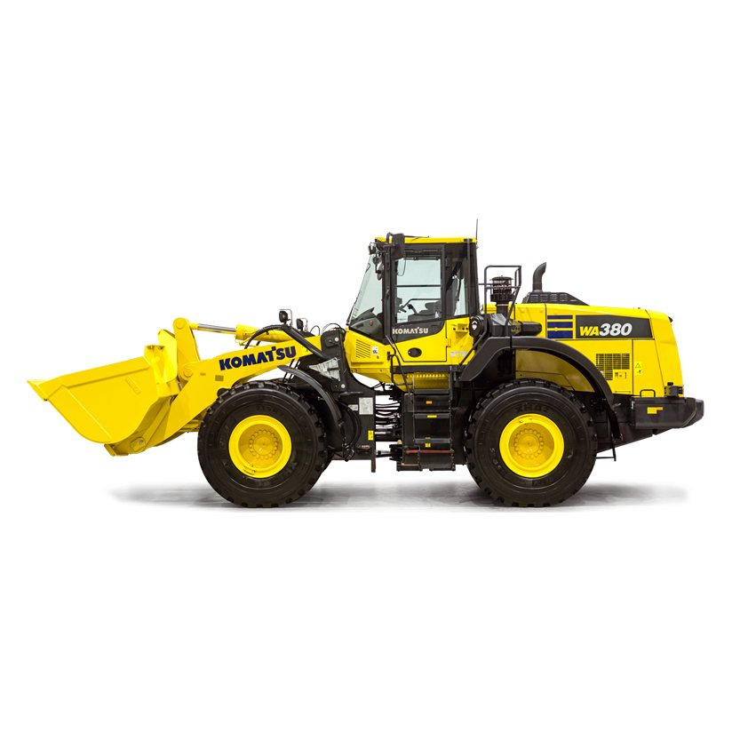
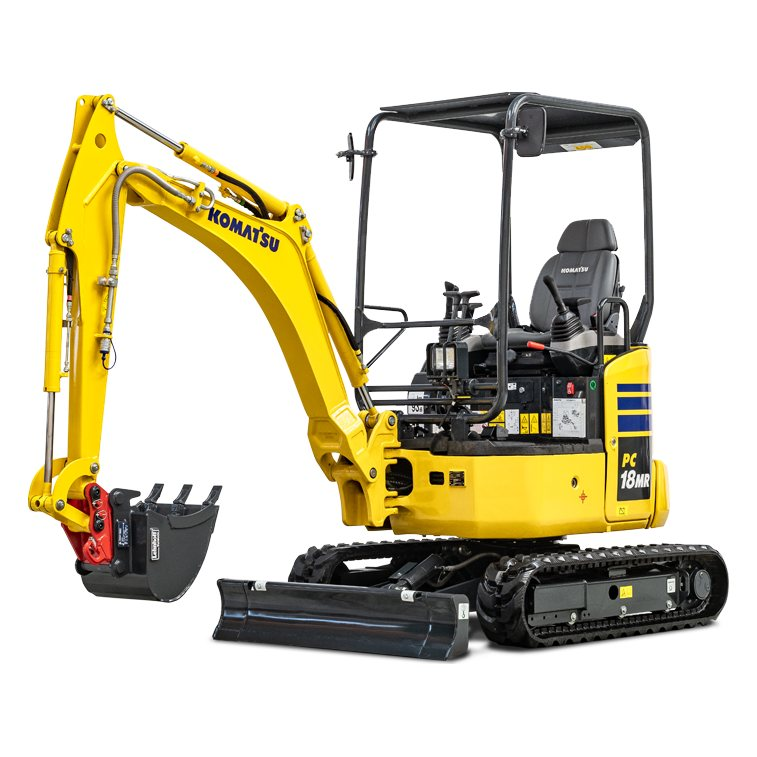
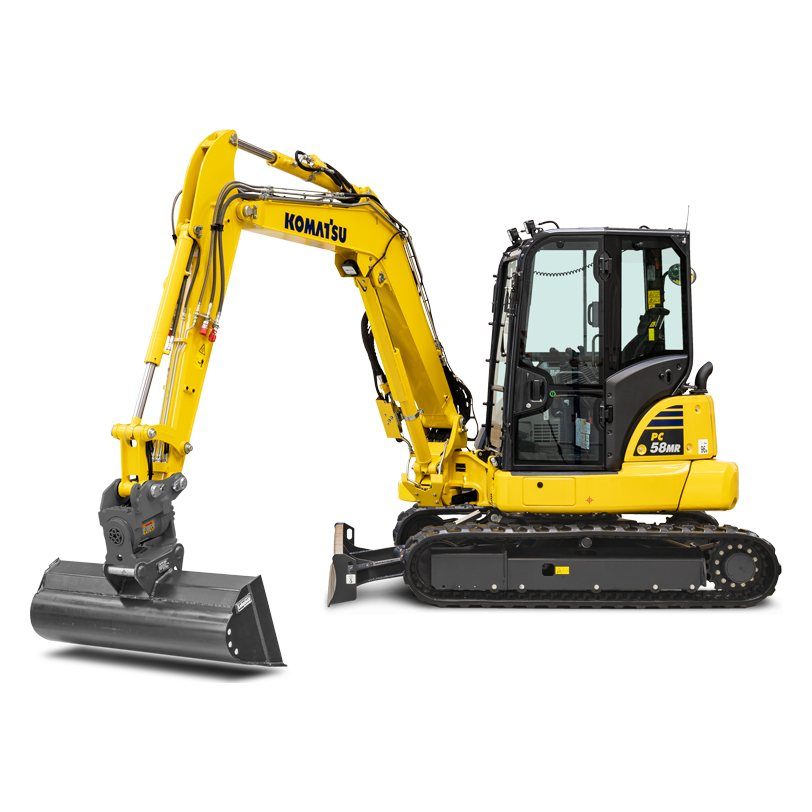

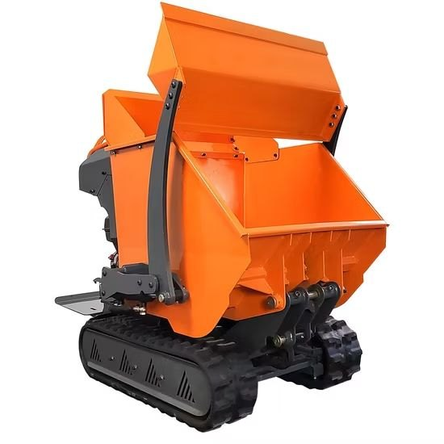

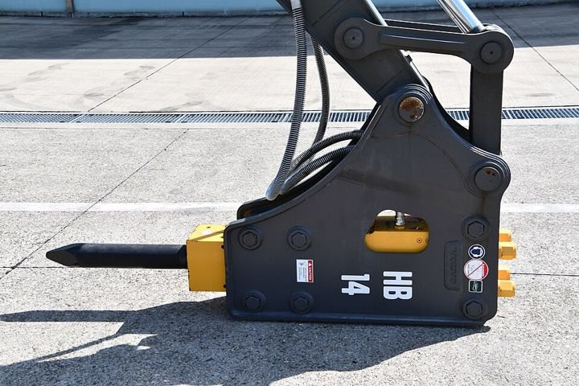

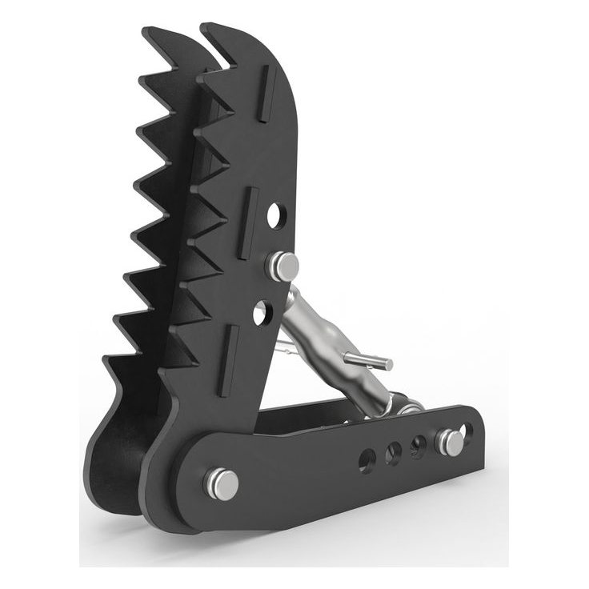

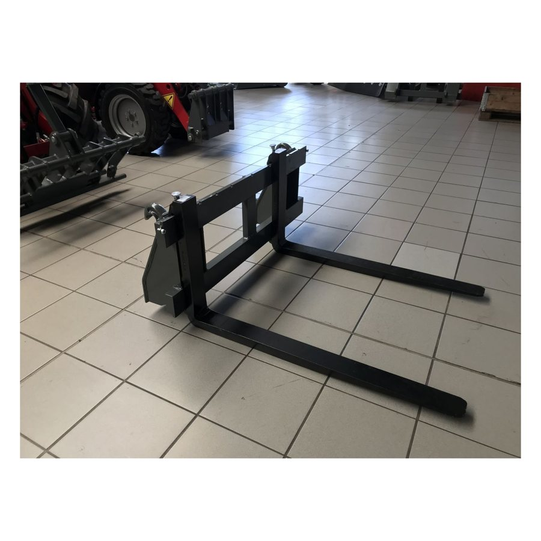
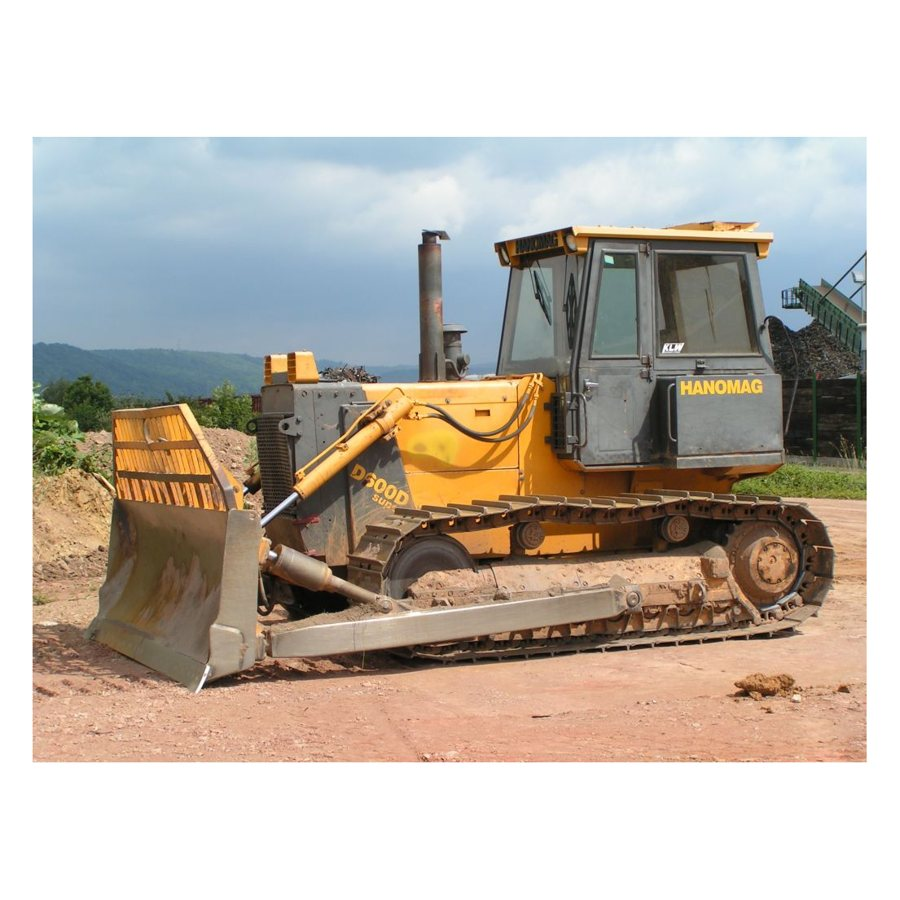

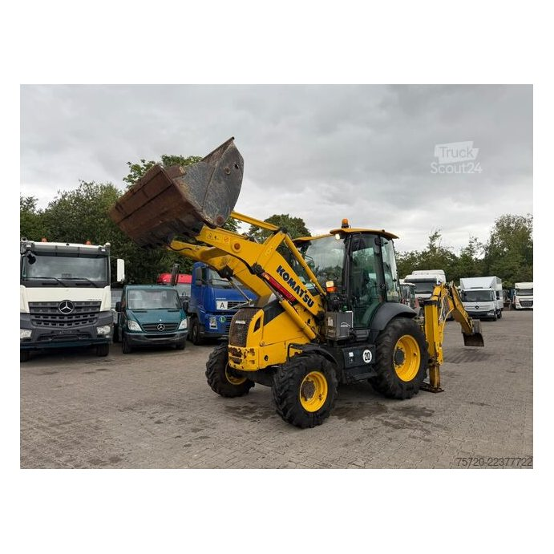

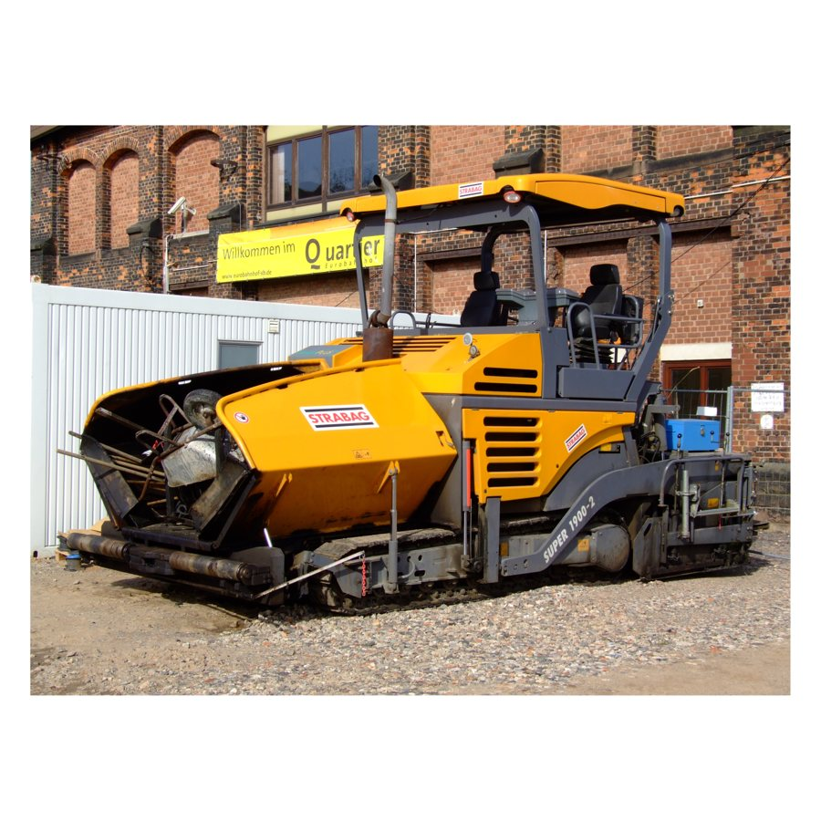
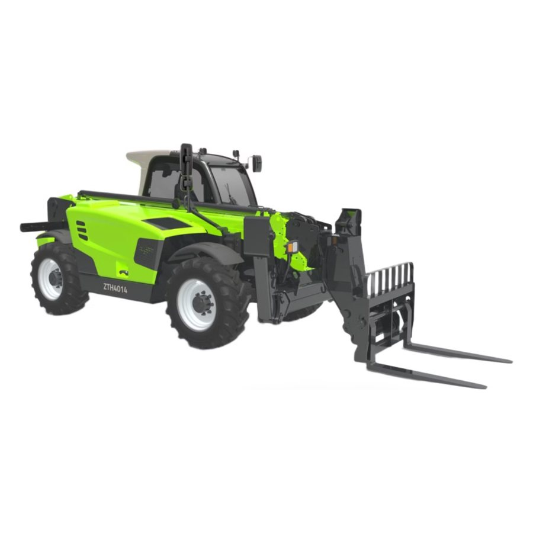
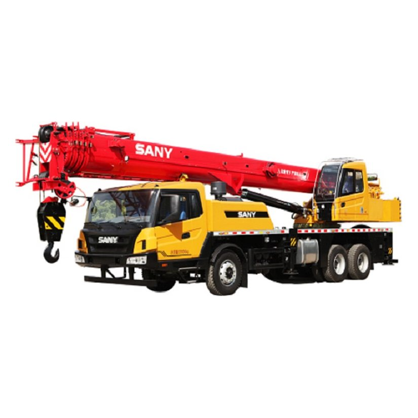


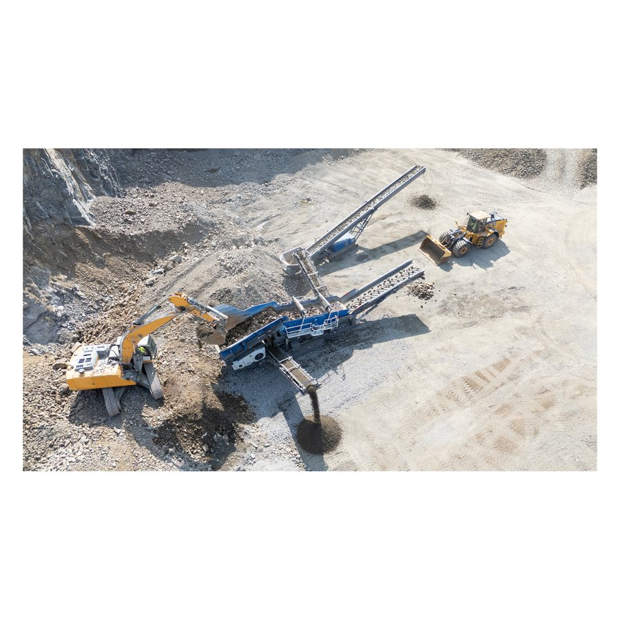
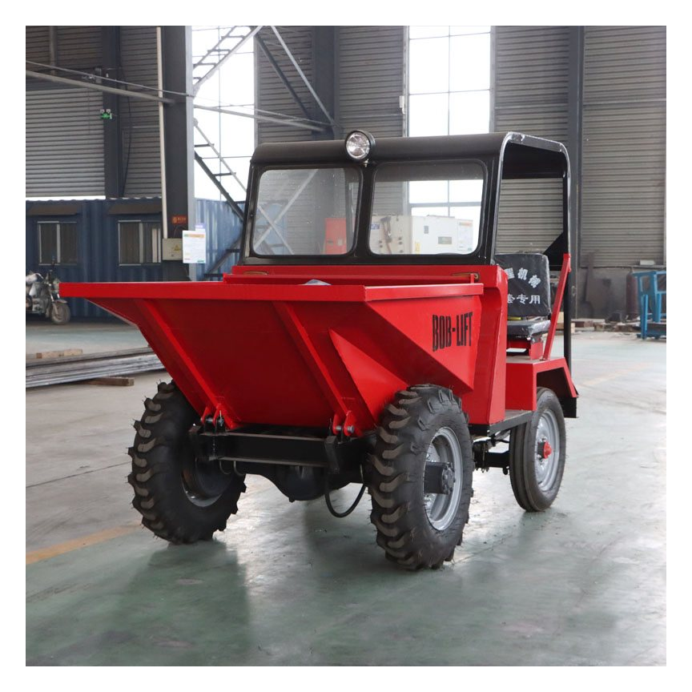
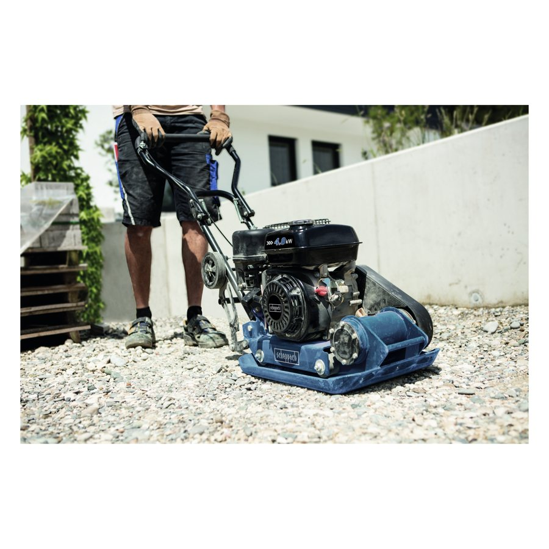